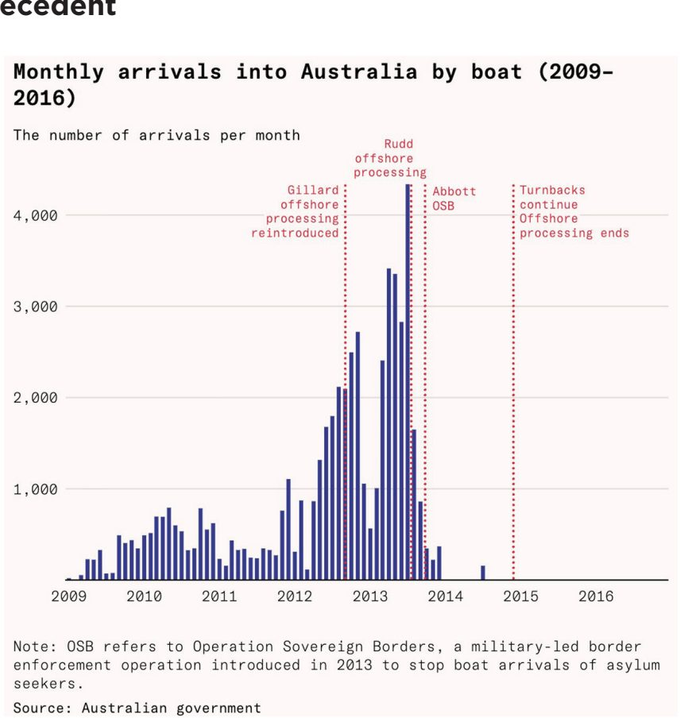
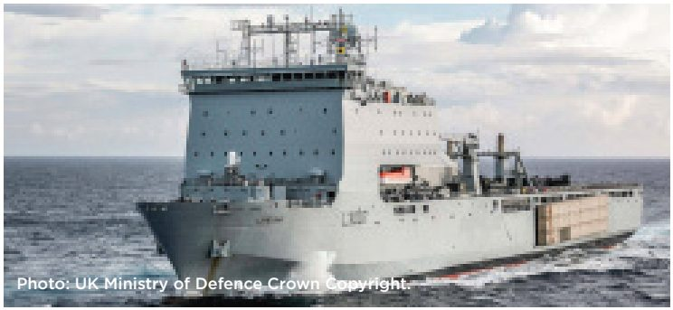
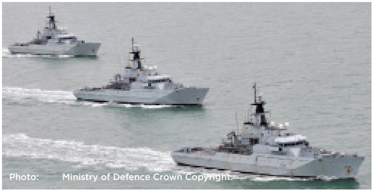
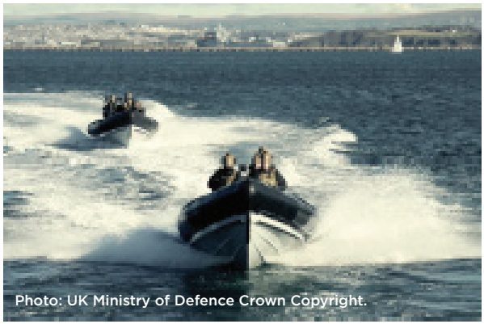
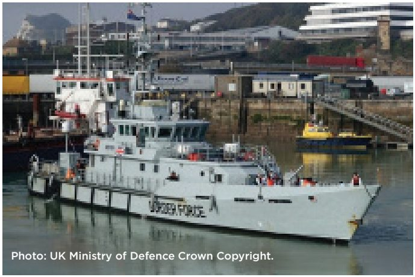
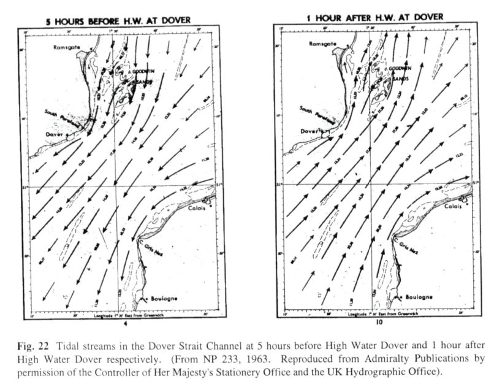
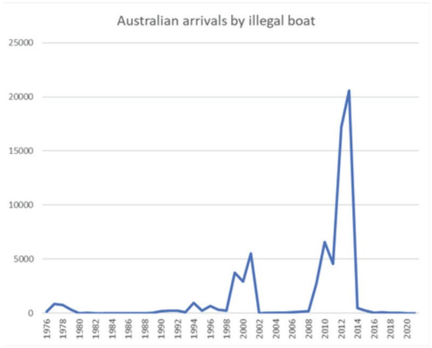
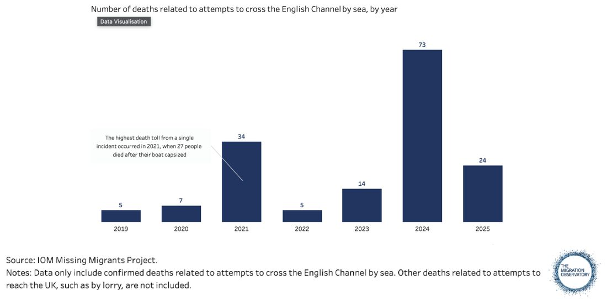
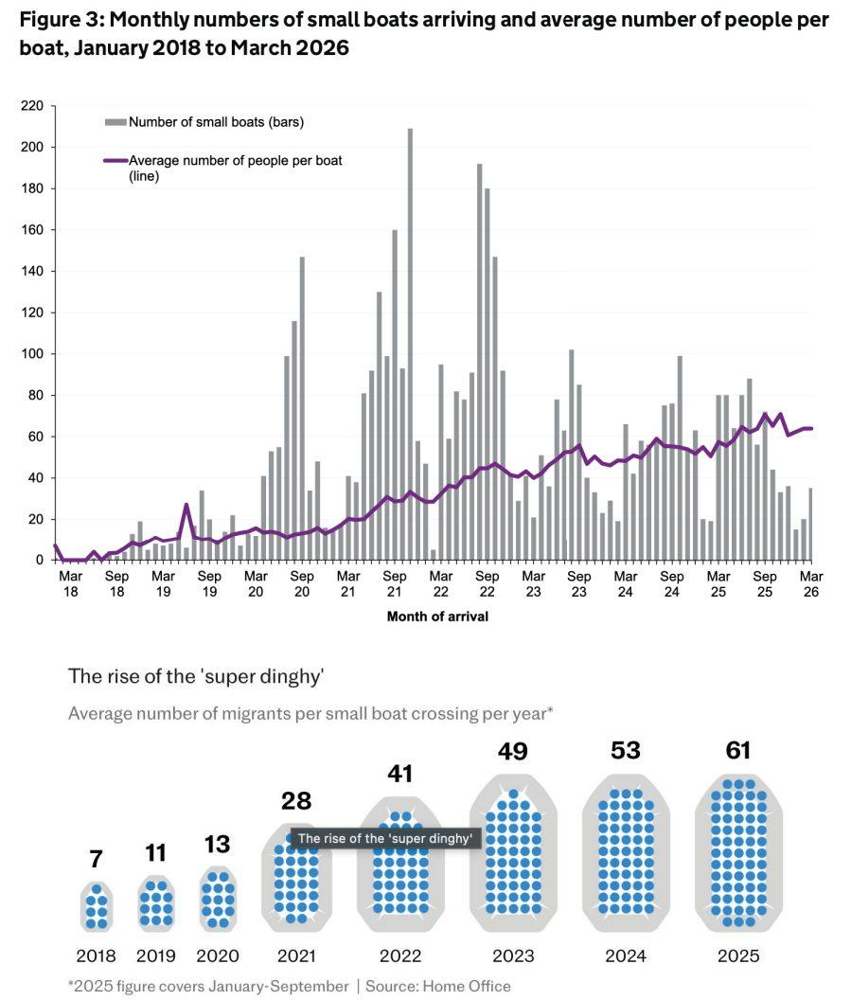
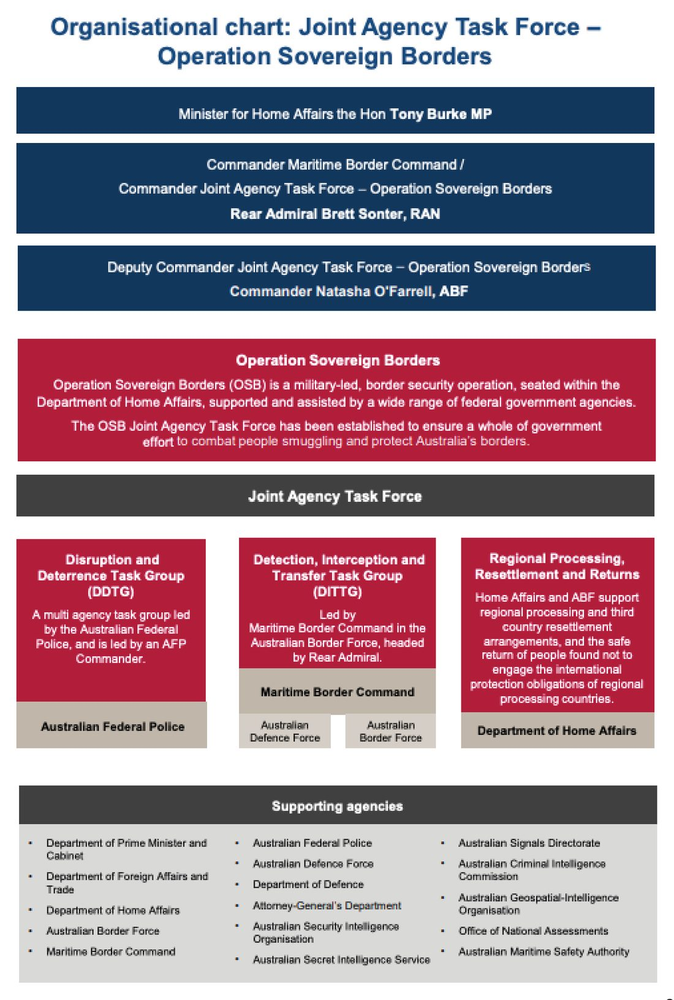

This is a searchable transcription of the original PDF for convenient reading on phones and computers. Page numbers are the document’s printed page numbers, with the PDF viewer page alongside. Footnotes appear at the foot of each page, as in the original. Charts, photographs and the organisational chart are reproduced from the original PDF. The original PDF is the authoritative formatted edition.
OPERATION FORTRESS
STOPPING THE INVASION OF BRITAIN
Reform UK
Endorsement by Brigadier Alan Litster OBE Royal Marines (Retd)
Recent events in Ceuta have laid bare the profound scale of the illegal immigration crisis that Europe faces. Put simply, we need a plan to deal with this threat. Successive British governments have failed to construct an effective response to this growing challenge. The plan outlined in this document is operationally feasible. It would have a genuine deterrent effect upon those choosing such routes and the networks who profit from enabling their movements.
Brigadier Alan Litster OBE RM (Retd)
Endorsement by Commander Chris Grace Royal Navy (Retd)
The remorseless invasion of our shores by young males from alien cultures who feel able to cross the English Channel unopposed threatens our existence as a peaceful democratic nation. Notwithstanding the apparent encouragement of this invasion by our uniparty governments, it must be stopped while we are still able to do so. There can be no compromise. The primary purpose of the Royal Navy is to defend our shores from attack. It must be tasked to do so urgently.
Commander Chris Grace RN (Retd)
Endorsement by John Cail, former Marine Chief Engineer
As a Merchant Navy marine engineer of some 38 years service, I, like many other men, have worked and stayed in many parts of the world. From Egypt to the Democratic Republic of Congo, Japan to South Africa. Far too many places to mention.
Never have I felt so detached from my country, I am watching it change before my eyes. This invasion is rapidly destroying the country my father and grandfather fought for. I never thought I would say this, but I am ashamed of this country. Not the people, but the Governments we have put above us who seem more than happy to watch and facilitate the destruction of the very fabric of our society.
Yes it may be difficult to stop this never-ending armada, this invasion, but it can be done. The vessels are there, the manpower is there. All that is required is a Government with the willpower to carry out the work.
Labour and the Conservatives have stood by and watched this catastrophe happen and done nothing for eight long years. Ultimately, all that is required is a Prime Minister with the will to say enough is enough, and that the safety of our people and our nation comes first. That man is without doubt Mr. Nigel Farage.
John Cail, former Marine Chief Engineer
Summary
Britain’s borders are broken. A Reform government will deploy the Royal Navy to fix them.
No one knows who is reaching our shores. Everyone arriving by small boat has crossed without a passport, without a visa, and without vetting by any authority. Many arrive having deliberately destroyed their documents.
This presents a clear and present danger to Britain’s citizens and to her national security. Men who came by small boat have been convicted of murder and rape. There are credible reports that Iranian intelligence has used this route to locate operatives in Britain. Smuggling gangs in Calais and Dunkirk should not get to decide who enters this country.
On current numbers, almost 100,000 more people will cross the Channel illegally and unvetted before the end of this Parliament - a city the size of Lincoln.
Operation Fortress is an end-to-end rescue and return operation led by the Royal Navy. It will ensure that every vessel carrying illegal migrants will be intercepted by the Royal Navy and everyone on board such a vessel will be returned to their country of departure.
Our Illegal Migration (Mass Deportation) Bill removes the reward for coming to Britain illegally. Operation Fortress removes the opportunity.
Under Operation Fortress, anyone paying thousands of euros to a smuggling gang will never make it to British shores.
Illegal migrants will be removed from unsafe vessels and given medical treatment, water, food, and blankets. They will then be immediately returned to their point of departure on a seaworthy vessel operated by the Royal Navy and landed safely ashore. Illegal crossings of the Channel cost lives. More than 160 people have died attempting a crossing since 2018. On 30 July 2026 alone, four people lost their lives. Every one of these deaths occurred under arrangements that Labour and the Conservatives are defending. The only way to stop these deaths is to stop the crossings. The only way to stop the crossings is to make them pointless.
Intercepting vessels at sea is a routine task for the Royal Navy. It boarded and searched vessels in British waters throughout the Troubles. In counter-piracy operations off the Horn of Africa, Royal Navy and Royal Marines teams detained suspects on board and delivered them to third countries. The Royal Navy has a long and distinguished history of guaranteeing domestic maritime security, including counter-smuggling, counter-terrorism, counter-migration, and counter-illegal fishing.
Under Operation Fortress, a Reform government will put an end to the split between the Royal Navy, Border Force, the Coastguard, and the Home Office by establishing one joint command under one commander. It will build a sovereign surveillance capability for early detection of every launch from French or Belgian shores.
The Channel has historically been Britain’s strongest defence. Under Labour and the Conservatives, it has become its backdoor. Operation Fortress will close it.
Introduction
In previous times of invasion and threat, the Royal Navy has defended the safety of us all, the final guarantor against the subjugation of these Islands by hostile actors. With over 2,050 illegal arrivals via boat already under Andy Burnham, it’s time for the Government to accept that Britain’s borders are broken.1 The recent invasion of Ceuta by tens of thousands of marauding and looting Moroccan men, and the subsequent rapid expulsion of some of them, demonstrates both the urgent need to act and that all that is really required is political will to stop the invasion of Britain.
Deploying the military is the option of last resort. It is a testament to the failures of the Conservative and Labour governments that deploying the Armed Forces in the English Channel to escort and return boat migrants to their point of departure is now both a proportionate and necessary response to the invasion of Britain. It is also a humanitarian response that will save lives in the Channel.
The most urgent threat to our security, which is at the forefront of the minds of most Brits, is the invasion currently taking place. Over 200,000 illegal, unvetted, (predominantly) fighting age males have arrived on our shores since the small boats crisis began. There has been no meaningful action from the uniparty despite more illegal migrants landing on British shores than on the beaches of Normandy on D-Day.2
We now know that the invasion has facilitated the passage of Iranian terrorists.3 Some of them have already been actively plotting terrorist attacks against Britain.4 British citizens have been murdered, raped and assaulted by criminals who have used the channel to break into Britain. Rhiannon Whyte lost her life to a criminal invader who arrived by small boat; he brutally murdered her whilst she was on shift in a hotel.5
Last summer Hadush Kebatu sexually assaulted a 14 year old girl in Epping, just days after arriving by small boat.6 Three men who arrived on small boats gang raped a young woman on Brighton beach.7 These cases are the tip of the iceberg given the Government goes to huge lengths, most recently going to court, to conceal the true scale of migrant crime.8 One murder or one rape by an illegal migrant is more than we should have been asked to tolerate by Labour and the Tories.
It is true that the uniparty has hollowed out the Royal Navy and left Britain exposed. We have gone from having 22 frigates and 15 destroyers 30 years ago to just 7 frigates and 6 destroyers today, and now have more Admirals than warships.9 Reform UK will rebuild the Royal Navy once again. However, this moment of crisis needs Britain’s brave service personnel to defend our island nation once again with the resources we currently have available.
- 1 https://www.lbc.co.uk/ ↩
- 2 https://theddaystory.com/discover/what-is-d-day/ ↩
- 3 https://www.telegraph.co.uk/news/2026/07/24/iran-smuggling-agents-into-uk-as-channel-migrants/ ↩
- 4 https://www.standard.co.uk/news/london/iranian-terrorism-israeli-embassy-asylum-seeker-taxpayer-house-b1227051.html ↩
- 5 https://www.telegraph.co.uk/news/2024/10/25/asylum-hotel-worker-rhiannon-skye-whyte-stabbed-to-death/ ↩
- 6 https://www.theguardian.com/uk-news/2025/sep/23/asylum-seeker-at-centre-of-essex-hotel-protests-jailed-for-12-months ↩
- 7 httpsw://www.thetimes.com/uk/crime/article/asylum-seekers-brighton-beach-rape-jailed-vdsf0d50p ↩
- 8 https://www.telegraph.co.uk/news/2026/07/19/lammy-to-fight-to-cover-up-crimes-of-foreign-offenders/ ↩
- 9 https://worldwarwings.com/royal-navy-26/?fbclid=IwY2xjawTYQtdleHRuA2FlbQIxMABicmlkETB2bk9laW1BOGNxN0N0bnlmc3J0YwZhcHBfaWQQMjIyMDM5MTc4ODIwMDg5MgABHg1_ixyorBo7kSgfTkIC1ssBQ2bmwdRRbwBujgiHHKbJ_2SILLfavI6cq93x_aem_vzroGwbeLWlBiEYFZvy-Hw ↩
The English Channel should be our greatest defence against hostile actors. Instead it is now a backdoor to Britain for the very people we should be keeping out. This must end. The armed forces exist to ensure the defence of the realm – the first duty of government. We will ensure that they fulfill this duty stopping the boats by rescuing and returning every illegal migrant who attempts the dangerous crossing of the English Channel. We cannot control the French or the Belgian response, but we have a moral obligation to our citizens to control our own borders and to stop this invasion.
Resisting the Invasion
Currently, jurisdiction for tackling illegal migration in the English Channel is a confused mess between the Royal Navy, the Border Force and HM Coastguard, with the RNLI stepping in as a taxi service for illegal migrants. Responsibility is fragmented and no single part of government is driving the system end-to-end.
This is an invasion and Reform UK will treat this crisis with the same seriousness as Russian incursions into our home waters. Appendix I explains the consequences of failing to defend our borders and the resulting threat that the Tories and Labour have waved through.
We will establish a joint operation under a Joint Task Force Commander appointed by the Chief of the Defence Staff, supported initially by Headquarters Standing Joint Command (United Kingdom) with a 3* Lt Gen in command. It will be interagency by design with Home Office, NCA, police, Border Force, Coastguard and intelligence agencies contributing significantly. Military personnel and units from the Royal Navy, Royal Marines, RAF and British Army will be directed to this task as a priority.
Operation Fortress will learn from previous attempts (such as the Joint Maritime Security Centre) and be focused on prosecuting targets not merely monitoring. The command structure could draw on PJHQ and deployable joint headquarters capabilities where the scale or international dimensions of the operation required them.
This will be an end-to-end, government-directed joint operation, with the Royal Navy leading the maritime component and civil authorities embedded throughout. Air assets and surveillance will help to detect channel crossings by small boat, the Navy will intercept and detain them (with assistance from Border Force and the Royal Marines), after which they will be transferred to secure vessels piloted by Royal Navy personnel/ Marines and taken back to French shores. This is a humanitarian mission which will ultimately save lives - illegal migrants will be medically treated if need be and safely escorted back to French or Belgian shores.
There is no meaningful operational barrier to the armed forces conducting board, search and detention missions in UK waters. The capability exists, the doctrine exists, and there is clear precedent. Where activity has not taken place, it has been due to a lack of political will and resistance from the civil service (i.e. Cabinet Office/MoD/ Attorney General’s Office), not an absence of military capability. A Reform Government will set the clear direction that authorities have been lacking.
Operation Fortress will encompass:
•Immediate creation of a naval-led joint forces command
•Emergency legislation to give the armed forces necessary powers
•Creating an Integrated Surveillance Command that gives the armed forces and Home Office the real time ability to track all incoming small boats
•Interceptions and escorted returns to the French or Belgian coast
We will learn the lessons of past failures by Labour, Conservative and foreign governments to stop small boats. We will learn from successful international operations, notably Australia’s Operation Sovereign Borders, which demonstrated that a single joint agency taskforce and certainty of interception at sea, coordinated with legislation that removes any prospect of settlement, all but eliminated illegal migration by small boat.
Chart: Australian Precedent

As Operation Fortress will be, Operation Sovereign Borders remains a joint agency task force under ministerial authority, not simply a navy operation. The detection, interception and transfer pillar combines Border Force and defence capabilities, while disruption and returns remain led from elsewhere. The main operational learning is that the Australian model depends on an entire system: maritime interception, law-enforcement powers, intelligence, processing, detention, diplomatic arrangements, receiving locations and strategic communications. It cannot be reduced to naval interceptions alone.
There is ample precedent for other effective maritime operations. Maritime boarding and search were routine during operations in Northern Ireland (1970-1990s) and later during counterpiracy operations in the Horn of Africa (2010s) that included detention on board naval vessels and delivery to third countries. Even today, naval personnel conduct boarding and searching of fishing vessels in British waters under delegated authority from DEFRA. The MoD even has established guidance for those who attempt to claim asylum in any boarding operation.
Spanish Army Deployment in Ceuta
There is very recent precedent for the use of the armed forces to deter illegal migrants following the incursion into Ceuta by 60,000 migrants. Spain has c.3,000 soldiers permanently based in Ceuta under the orders of the General Command of Ceuta (COMGECEU).10 Following the border breach on the 30th July, dozens of armoured fighting vehicles alongside regular troops were deployed to the Tarajal border crossing. Units mobilised include the 54th Ceuta Regulars Group, the 2nd Legion Tercio “Duque de Alba,” and the 3rd Cavalry Regiment “Montesa.”11 In addition Spain has also deployed an additional 60 soldiers from the mainland.
The army’s actions were primarily centred on securing what was a chaotic and dangerous situation which posed a significant threat to life, but there is anecdotal evidence that they used force. Their role in Ceuta has also included surveillance, logistical support, and basic humanitarian distribution.12 By the 31st July around 48,000 migrants had been returned to Morocco.
Establishing a Joint Command
On his first day, Prime Minister Nigel Farage will convene COBRA, having declared the small boats invasion a national emergency.
He will then direct his Secretary of State for Defence, the Chief of the Defence Staff and the Standing Joint Commander (and, if appropriate, the Chief of Joint Operations) to prioritise the emergency in the English Channel, to treat it as a threat to national security and to deploy the armed forces to intercept, detain, and return every small boat migrant to their country of departure. Pending any new statutory framework, Home Secretary Zia Yusuf would submit the appropriate formal request for military assistance.
The operation would initially be established through HQ Standing Joint Command (UK), with a dedicated Joint Task Force Headquarters created if required. The joint military operation, under the command of a Lt General (3*), with assistance from the Home Office where necessary, will then instruct a range of supplementary agencies, with the Coastguard, NCA, Police, Border Force, and intelligence agencies contributing. This will place Operation Fortress on a par with other hostile incursions, like Russian activity in the English Channel. Most operational decisions are for the operational commander, but we give an indication of what decisions he or she may take below.
Operating within a single joint command structure under agreed command relationships, the Joint Task Force Commander can coordinate the operation and exercise operational or tactical control over assigned assets, but civil officers retain their statutory responsibilities and professional chains.
Longer term, we would consider adopting the structure in Appendix III as the enduring solution after the initial ‘surge’ using Standing Joint Command (UK). This would reduce the burden on the Armed Forces, maintain ministerial direction and accountability, and Home Office involvement, whilst preserving military command of assigned military
- 10 https://www.infodefensa.com/texto-diario/mostrar/5971615/radiografia-unidades-ejercito-tierra-ceuta-casi-2700-militares-regulares-legionarios-frente ↩
- 11 tps://www.zona-militar.com/2026/07/31/espana-despliega-al-ejercito-en-ceuta-sin-declarar-una-emergencia-de-interes-nacional/ ↩
- 12 ttps://www.firstpost.com/explainers/how-ceuta-current-migration-crisis-compares-to-2021-is-it-the-largest-eu-has-seen-14035284.html ↩
Operation Fortress represents a huge saving on the £3bn currently spent on asylum accommodation alone annually.
Detention Powers
The Armed Forces are only currently able to detain people under certain circumstances, typically only during overseas operations. Powers under the Immigration Act must generally be exercised by immigration officers. Embarked law-enforcement detachments, comprising Border Force and, where appropriate, police or NCA personnel will therefore be assigned to tasked Royal Navy vessels, to conduct immigration arrests and oversee detention until emergency primary legislation is passed. This legislation will grant armed forces personnel immigration powers and stop attempts to claim asylum or protection (and appeals). No asylum claim can or will be considered. Additional legal powers may be needed for the armed forces to expeditiously board and secure the vessel, arrest or detain, take physical custody and guard, and transfer to the return platform.
Command Centre
The principal operational headquarters would be ashore. An afloat Maritime Component Commander or on-scene commander could exercise tactical control from a suitable naval or government vessel. The primary afloat command platform would be a Royal Navy vessel in the English Channel close to the median line. It will act as the at-sea-command, with its primary function to direct, coordinate, and integrate naval vessels, aircraft and UAVs, and specialised units to achieve mission objectives while maintaining force protection.
Integrated Surveillance Command
To implement our plan, we must ensure that we have the sovereign capability to identify and stop the vessels that attempt the crossing. This will be achieved by creating an Integrated Surveillance Command that gives the joint command the real time ability to track all incoming boat launches and their passage.
We must be able to independently identify small boats, without reliance on French and Belgian authorities. We will therefore end data-sharing barriers between the Home Office and MoD, rapidly procure necessary kit, deploy drones and UAVs to supplement maritime patrol aircraft, use space satellite and infrared feeds, and ultimately fuse multiple data sources into a usable operational picture.
Air support and surveillance would be provided by small drones/UASs, flown from Lydd and Dover. Additional air patrols, with manned aircraft, would be flown by Coastguard patrol aircraft, the Beechcraft King Air and the Piper Navajo, or helicopters based at Doncaster, Southend or Lydd. Additional RAF support would be provided by RAF aircraft including P-8 Poseidon maritime patrol aircraft or reconnaissance planes. The Army can also support with provision of aerial assets.
Operational Plan
The operation runs as a continuous four-stage cycle: detect and track; interdict; board and secure; transfer and return. No stage depends on French cooperation and every stage is under the single authority of the joint commander. Small boats will be intercepted, their occupants will be detained, given water and food and medically assessed - and if need be treated - before being returned to their point of departure, including on military-crewed rigid-hulled inflatable boats (RHIBs), or another suitable transfer craft. Re-embarcation will be conducted by trained military personnel with Border Force officers on hand in case of non-compliance. Detention capacity at sea will be provided by a Bay Class Landing Ship.
Detect and Track
The integrated surveillance force described above watches the launch beaches in France and Belgium around the clock. Because the tidal cycle dictates when smugglers can launch, the windows of danger are predictable hours in advance, assets are surged to meet each slack water window whilst capability is scaled.
Interdict
On detection of a launch, the command ship tasks the nearest River-class Offshore Patrol Vessel (OPV), which closes on and shadows the dinghy, deploying its RHIBs to come alongside. Every boat that enters UK waters is met. Border Force cutters under military command will be on standby with additional RHIBs and capacity if OPVs are overwhelmed or under maintenance. We will deploy a fleet of 10 vessels, with capacity to launch up to 20 RHIBs at a time. Given that the volume of small boat crossings, even on the busiest days, are in the single or low-double digits, this is comfortably enough to intercept every boat that attempts a crossing. The deployed fleet size has been designed to be large enough to cover a number of small boat crossings equal to the busiest day since 2024, 18 boats a day. We have also accounted for the increasing size of small boats (with people smugglers using so called ‘super dinghies’).
Board and Secure
A law enforcement detachment of Border Force officers and police will be aboard each tasked vessel to make the immigration arrests, with naval personnel providing boarding, security and safety of life at sea support. Detainees will be assessed, with medical attention given where necessary.
Transfer and Return
Depending on French willingness to allow disembarcations in ports, migrants may be transferred to RHIBs to be returned to French shores by Royal Navy personnel or Marines. There they will be disembarked, and the vessel will return. The transporting vessels will be manned by a pilot and armed supporting personnel, to keep the peace and maintain order during transit.
As they will have been placed under detention by attending border force officers (and police where relevant), migrants can be transferred to return vessels under use of force where necessary. Operationally, we anticipate agreed returns to French or Belgian ports or transfer points, but will anticipate and plan for returns without the receiving state’s consent.

Bay Class Landing Ships are designed with loading and unloading at sea in mind and at full capacity the ship can accommodate 700 personnel making it ideal for holding a large number of illegals (with detention capacity ultimately depending on configuration).13

River-class Offshore Patrol Vessels will be responsible for interception, utilising intelligence and surveillance. 3 River-Class Offshore Patrol Vessels are already in British waters and could be redeployed almost immediately. The maximum capacity of the River-class Offshore Patrol Vessels is 110, including a crew of approximately 40.14 However, having the Bay Class Landing Ship in The Channel will allow, when necessary, migrants to be detained at sea ensuring a rapid turnaround for interceptions.

The OPVs also have the capability to carry and deploy two RHIBs (rigid-hulled inflatable boats). These are small high speed vessels which will be used as required for interdictions and returns. If capacity is ever overwhelmed, the RHIBs can be used to monitor the dinghies whilst awaiting transport.

Border Force Cutters will be in a supporting role, responsible for patrolling the channel, intercepting some boats and assisting with surveillance of boats attempting to make the crossing.
They will also be responsible for transporting additional law-enforcement personnel to support the boarding and detention of occupants if additional help is needed to detain illegal migrants ready for their return.
Tides
The English Channel has some of the most extreme tidal currents in Europe, the strongest recorded at 13 knots.15 These flow alternately east and west, changing direction every 6¼ hours16. Vessels need accurate tidal information at their disposal and skillful seamanship.
Migrants typically cross the Channel when there are light winds and calm seas. Smugglers wait for slack water to cast off the low-powered dinghies. The limited parts of the coast where these conditions regularly occur have seen smugglers radically extend their operations, with launches now happening from Dunkirk to Dieppe.17
Strong currents create choppy conditions, endangering their passage. Associated Press News cited the ‘changeable’ conditions in the Channel as one of the reasons for the deaths of the 31 migrants when their boat capsized.18

Nevertheless, the cycle is predictable, enabling foreseeable windows for interception. Tidal conditions and dense commercial traffic are familiar and manageable operational factors to a Royal Navy highly experienced in Channel operations with three classes of deployable vessels as detailed above.
Commercial shipping
The English Channel is the busiest shipping lane in the world, with 400-500 vessels passing through each day.19 The traffic in the Channel is organised by the Traffic Separation Scheme (TSS), functioning much like lanes on a motorway20, and military vessels have established procedures for operating in dense traffic.
Circulation is predictable; the Channel is closely monitored. The Dover Strait, for example, is a mandatory reporting area, meaning that vessels over 300 gross tonnes must report to either Dover MRCC (South West Lane) or CROSS Gris Nez (North East Lane) before proceeding.
- 15 https://tidetechmarinedata.com/blog/the-changing-tides-in-the-english-channel/ ↩
- 16 https://eprints.soton.ac.uk/464417/1/790624.pdf ↩
- 17 https://www.facebook.com/watch/?v=2501175767036282 ↩
- 18 https://apnews.com/article/europe-france-migration-english-channel-551193aa7340b681d44af16eae9dc610 ↩
- 19 https://geographical.co.uk/news/geo-explainer-where-in-the-world-are-the-busiest-shipping-lanes ↩
- 20 https://www.gov.uk/government/publications/dover-strait-crossings-channel-navigation-information-service/dover-strait-crossings-channel-navigation-information-service-cnis ↩
The manoeuvrability, superior sensors and situational awareness of Navy vessels - able to track hundreds of contacts simultaneously while liaising with the Coastguard - mean traffic would not lead to an operational problem. The Royal Navy has operated in the Channel for centuries; many crews regularly train in these waters.
The Joint Command will integrate closely with Dover Coastguard and the Channel Navigation Information Service to coordinate numerous small craft and RHIBs close to vulnerable dinghies.
Legal Analysis
The Immigration Act 1971 criminalises illegal entry.21 It is a form of learned helplessness that we have allowed the clearly expressed will of Parliament to be subverted by international laws that no one voted for and no one consented to, enforced by a judiciary that is ideologically captured by progressive dogma. Those who say that the quagmire of international and domestic laws (such as the European Convention on Human Rights, the Human Rights Act and the Modern Slavery Act) that have led to open borders prevent the implementation of this policy are wrong.
Reform UK has already pledged to pass the Illegal Migration (Mass Deportation) Bill as part of Operation Restoring Justice.22 This will be the biggest change to the UK immigration system in recent memory, sweeping away hundreds of pages of ineffective legislation and replacing it with one simple premise: if you enter illegally, you are ineligible for asylum and must and will be removed by the Home Secretary.
Nonetheless, our plan, which operates in coordination with Operation Restoring Justice, is lawful from Day 1. France is a safe third country. People who have passed through safe third countries on their way to the United Kingdom are ineligible for asylum.23 In that case they have no lawful right to enter or remain in the United Kingdom and the Home Secretary can make an immediate deportation order. Statutory notice to remove and of departure details will be combined.24
We believe that Operation Fortress is fully compliant with the ECHR (during the short period that a Reform UK Government remains a member), a lawful prioritisation of the requirement to protect life. A full analysis is included at Appendix II.
Our plan will also be a lawful exercise of immigration powers under maritime law, and is compliant with the duties of contracting parties under UNCLOS (United Nations Convention on the Law of the Sea) and SOLAS (International Convention for the Safety of Life at Sea). These would be lawful interdictions and fully protect and preserve life at sea. Indeed, securing our borders would dramatically reduce deaths during Channel crossings.
This means that the Armed Forces can be given clear written authority within a defined jurisdictional framework from Day 1.
- 21 Section 24 of the Immigration Act 1971. ↩
- 22 https://www.reformparty.uk/view-pdf/reform-immigration ↩
- 23 Part 4A of the Nationality, Immigration and Asylum Act 2002 ↩
- 24 Section 10A of the Immigration and Asylum Act 1999. ↩
Pending the passage of primary legislation and to prevent legal challenges, we will use any and all emergency powers available to the executive to implement the will of the British people and to immediately stop the boats and detain illegal migrants. Pending their receiving formal detention powers, military personnel would act under the supervision of immigration officers when assisting with detention.
Use of Force Authorisation
The force package, weapons posture and rules of engagement would be approved through the established political and military chain of command. The operational commander would apply those authorities and retain responsibility for tactical decisions, force protection and safety of life. Armed forces would operate under normal rules of engagement, determined by the operational commander in accordance with JSP 398 (United Kingdom Manual of National Rules of Engagement). Lethal force would be available where lawful and necessary in self-defence or defence of others against an imminent threat to life. Once boats have been intercepted, boarded, and had the migrants on them removed and detained, the craft would be rendered safe, seized or recovered, preserved for evidential purposes where required, and subsequently disposed of. Destruction at sea would remain an option.
French and Belgian Obligations
France is obligated under numerous agreements with the United Kingdom to prevent dangerous small boat journeys departing from French shores. We do not believe for one moment that the French Navy or Gendarmerie would open fire on Royal Marines conducting a humanitarian mission and transporting civilians. France is one of our closest allies and a fellow member of NATO. That is not a serious hypothetical and the likelihood of tactical confrontation is incredibly low under any scenario, given that intervention or resistance would ultimately endanger lives. Indeed the Rassemblement National party has indicated that it would cooperate with attempts to return illegal migrants.25
We believe that, as a lawful humanitarian mission, the French Government will authorise passage and indeed uphold its obligations under returns and other agreements with Britain to stop small boats departing. France is already obliged to process asylum claims from migrants passing across their territory, so is in clear breach of those obligations. Remaining on board does not remove the problem. Landing detained people from a British craft still requires physical control at the point of disembarkation and creates the possibility of resistance, disorder, injury or intervention by French authorities.
France has agreed to work to stop illegal migrant crossings on numerous occasions. In 2018 The UK and French government signed the Sandhurst Treaty26, which replaced older agreements and saw Britain fund French surveillance and border infrastructure at Calais and Dunkirk to the tune of £45m. In 2019 they signed the Joint Action Plan on Small Boat Crossings27, with further UK funding to increase border patrols on the beaches of Boulogne, Calais and Dunkirk to prevent small boat crossings.
In 2021 they signed the UK-France Security Accord, where Britain provided £54m to significantly expand French coastal patrol capability and to increase intelligence sharing to intercept boats prior to launch.28 Rishi Sunak announced a UK-France Joint Leaders’ Declaration in 202329, a major £476m package to construct a new migrant detention centre, and once again massively ramp up French coastal patrols and surveillance technology. Finally, under Keir Starmer the British Government signed the One-In-One-Out agreement in 202530, and the UK-France Border Security Partnership in April 202631, the most expensive yet at £662m to fund a total of 1,392 active personnel on French shore and coastal patrols.
And yet the boats continue to arrive. We would simply be helping the French uphold their treaty obligations.
Our ambitions are only for British territorial integrity, which requires halting the ongoing invasion. Our operation will not target French assets, and will threaten no French national. Once the illegal migrants are safely returned to French shores, British naval vessels will withdraw.
Learning lessons from Operation Isotrope
In August 2020 it was revealed that the Home Secretary had approached French officials for “cooperation in using the Royal Navy and Border Force boats to block the path of refugees and migrants attempting to reach the UK in small boats”.32 Documents revealed there were trials of an Australian-style ‘blockade’ in the Channel along the UK-France border. These efforts were short-lived. The Navy turned down these suggestions, and ruled out any use of “pushbacks” in the future.
Whilst the lawfulness of Operation Isotrope was never tested in the courts, press briefings indicated that Government lawyers advised specifically that any ‘turnaround’ tactic might not be lawful.33 Our plan is meaningfully different and does not involve turnarounds. The legal analysis is therefore different (and covered above).
Further, a Navy source was quoted as saying, “I’m not sure pushback would work; it’s not part of our ethics”.34 While no official reason for the rejection was released, a later House of Commons committee report into Operation Isotrope (the code name for the use of the military to counter migrant crossings) noted that “The MOD appears to regard its objective as ensuring that no migrant lands on their own terms, but the Home Office sees the objective as deterrence. [...] The MOD’s objective is in any case at best incoherent, since the migrants’ overriding aim is to land in the UK, regardless of whether or not on their own terms”.35
- 27 https://assets.publishing.service.gov.uk/media/5c49e8fee5274a6e52aa60ba/UK_France_declaration_24_Jan_13.00.pdf ↩
- 28 https://api.parliament.uk/view/treaty/PgeMccBB ↩
- 29 https://www.gov.uk/government/publications/uk-france-joint-leaders-declaration/uk-france-joint-leaders-declaration ↩
- 30 https://researchbriefings.files.parliament.uk/documents/CBP-9681/CBP-9681.pdf ↩
- 31 https://researchbriefings.files.parliament.uk/documents/CBP-9681/CBP-9681.pdf ↩
- 32 https://www.theguardian.com/uk-news/2020/oct/01/uk-tested-channel-blockade-to-deter-migrants-leak-reveals ↩
- 33 https://www.theguardian.com/uk-news/2021/nov/10/priti-patel-warned-she-could-lose-legal-tussle-in-bid-to-turn-back-migrant-boats ↩
- 34 https://maritime-executive.com/article/royal-navy-turns-down-migrant-push-back-mission-in-english-channel ↩
- 35 https://publications.parliament.uk/pa/cm5802/cmselect/cmdfence/1069/report.html ↩
Operation Isotrope demonstrated the consequences of unclear political direction, divided departmental ownership and different definitions of operational success. The failure of the plan was primarily due to a lack of political will to fully deploy and empower military assets, and a failure of military and civilian authorities to properly co-operate. Our plan addresses both of these flaws. There are many other successful British and international precedents, and Operation Fortress borrows aspects of these operations.
The Australian Precedent
Since Australia implemented Operation Sovereign Borders in 2013, arrivals by illegal boat crossing have collapsed to near zero. The policy has been so effective that since February 2014 almost every boat attempting to reach Australia illegally has been intercepted. For 1,400 days from July 2014 to August 2018, no illegal boat migrant set foot on Australian soil.36 Following a single boat landing in 2018, there were no further landings until November 2023.37 Critically, there have been 0 known deaths at sea since the launch of Operation Sovereign Borders, a reduction from 1,200 deaths from 2007-2013.38
Under Operation Sovereign Borders, boats were turned around and people were left to complete the final leg of the return journey alone and unescorted. Under Operation Fortress, everyone will be rescued and safely returned to their point of departure. What the Australian precedent proved, however, is that the certainty of interception and the guarantee of return is the most successful deterrent possible.
We will create a joint border enforcement regime so comprehensive that anyone considering making the crossing to Britain can be certain of being intercepted by the Royal Navy and returned to France. Where previous governments have dangled the prospect of an extended hotel stay and state subsidy for life in front of the illegal migrants encamped in Calais, we will send a crystal-clear message that they will not ever set foot on British soil.
Operation Sovereign Borders
During the 2013 federal election, the Tony Abbott-led Coalition campaigned on a policy of “stopping the boats”. Their solution was Operation Sovereign Borders, which combined the resources of the Royal Australian Navy, the Australian Border Force, and a number of ing government agencies (See Appendix III for complete organisational structure). In their policy paper released before the election they included amongst the key initiatives to be taken in the first 100 days:
“Issues protocols for Operation Relex II, to turn backboats where it is safe to do so”
- 36 https://reliefweb.int/report/australia/suspected-asylum-seekers-found-daintree-taken-christmas-island-ministers-office. ↩
- 37 https://www.news.com.au/national/politics/labor-under-fire-after-undetected-indonesian-boat-carrying-12-people-arrives-on-mainland-in-wa/news -story/8198dbb034dca624705fe04a254a2521 ↩
- 38 http://immi.homeaffairs.gov.au/programs-subsite/files/administration-immigration-programs-14th-edition.pdf https://theconversation.com/factcheck-did-1200-refugees-die-at-sea-under-labor-38094 ↩
Regarding operation structure, the paper makes a note that:
“Our current disjointed institutional arrangements within government do not provide an optimal structure for securing our borders. Instead, they run the continued risk of simply justifying more lame excuses for why things don’t happen. There are more than 12 separate government agencies that have involvement in, or responsibility for, the security of our borders, yet the boats still keep coming and too much is falling between the cracks”
The Joint Agency Task Force is commanded by a senior Royal Australian Navy officer, with a senior Australian Border Force officer as deputy. The Joint Agency Task Force is made up of three main pillars, each supported by supplementary government agencies. These are:
–The Disruption and Deterrence Task Group (DDTG): A multi agency task group led by the Australian Federal Police, and is led by an AFP commander.
–The Detection, Interception and Transfer Task Group: Led by Maritime Border Command in the Australian Border Force, headed by Rear Admiral, and supported by the Australian Defence Force. (ADF)
–The Regional Processing, Resettlement and Returns: The Home Affairs
Department and ABF support regional processing and third country resettlement arrangements.
Legislative Facilitation
The Australian Federal Government passed legislation creating new powers and legal structures to facilitate Operation Sovereign Borders, and has since strengthened the regime through further bills, including:
–Reintroducing the Temporary Protection Visa (TPV)39 scheme for asylum seekers currently in Australia awaiting determination of their refugee status. This visa specifically prohibits family reunification and a number of other rights afforded to other visa holders, and holders are required to reapply every three years, in case conditions change in their home country. They also have no right to re-enter the country if they depart Australia. Additionally, the granting of a TPV prevents a refugee from applying for permanent protection.
–Establishing that any person that attempts or succeeds in travelling to Australia illegally by boat will be banned from ever being resettled in Australia, and banned from ever visiting Australia in the future, regardless of the outcome of their asylum claim.40
–Employing s91W of the Migration Act to deny refugee status outright to anyone suspected of having deliberately discarded or destroyed identification documents.41
–Allowing the government to pay third countries to accept noncitizens, regardless of their refugee status. This power specifically does not require the receiving country to be parties to the Refugee Convention, provide stringent protection from harm or detention abroad, or prohibit further onward deportation.42
- 39 https://immi.homeaffairs.gov.au/visas/getting-a-visa/visa-listing/temporary-protection-785 ↩
- 40 https://www.dw.com/en/australia-moves-toward-lifetime-entrance-ban-on-offshore-refugees/a-36201210 ↩
- 41 https://www.aph.gov.au/~/media/Committees/fapa_ctte/estimates/bud_1415/pmc/pm34_att11.pdf ↩
- 42 https://www.hrw.org/news/2024/11/28/australia-passes-harsh-new-anti-migration-laws ↩
–Grants authorities the power to seek prison sentences of one to five years for previously recognised refugees whose status has been revoked or for individuals whose asylum claims have been rejected, if they refuse to cooperate with deportation efforts.43
–Expanding the Immigration Minister’s powers to reverse immigration decisions
and strip people of their recognised refugee status.44
–Banning visas from countries that do not accept deportations of their nationals.45
–Granting broad powers to detention authorities to search detainees and seize their phones.46
Operational Reality
The Australian system ensures that any illegal immigrants seeking entry to Australia via boat are detected, detained at sea, and turned back to the country of origin (or at worse placed in offshore detention facilities), never stepping foot on Australian soil. Every boat is intercepted, and those aboard are either turned back (where the vessel is considered seaworthy enough to do so), or transferred to special ‘orange life boats’ which are then towed back to their country of departure. The results speak for themselves:

Australia has faced no meaningful legal consequences for Operation Sovereign Borders. In 2014 the Australian Government was referred to the International Criminal Court (ICC); in 2020 the Office of the Prosecutor declined to open proceedings.47 In 2017 various United Nations committees made rulings against Australia’s foreign processing centers, but no international body has brought prosecutions against Australian politicians.48 The Australian Government rejected the UN Human Rights Committee’s orders to pay compensation in 2025.49 None of these examples were related to UNCLOS or SOLAS and no country has brought a case against Australia on the basis of violating either treaty. The aforementioned UN statements relate to third country detention rather than interceptions at sea.
- 43 44 45 46 ibid. ↩
- 47 https://uploads.guim.co.uk/2020/02/14/200213-Andrew-Wilkie-Response-from-International-Criminal-Court-Australian-Government-treatment-of-asylum-seekers_(1).pdf ↩
- 48 https://www.ohchr.org/en/documents/concluding-observations/committee-economic-social-and-cultural-rights-concluding https://www.ohchr.org/en/documents/concluding-observations/human-rights-committee-concluding-observations-sixth-periodic-0 ↩
- 49 https://www.ag.gov.au/sites/default/files/2026-01/nabhari-v-australia-3663-2019-australian-government-response-to-views.pdf ↩
Other Precedents
There is existing precedent for the use of a navy to facilitate interdiction at sea, pushback vessels seeking to enter territorial waters without permission, and for naval operations with the power to detain suspects at sea:
–The Northern Ireland Squadron was a unit of the Royal Navy created during The Troubles to prevent paramilitaries moving illegal arms by sea.50 They were given powers to interdict and turn around any boat suspected of transporting arms for paramilitary groups.
–Both Greece and Italy have utilised similar tactics to intercept boats carrying migrants in the Mediterranean.51 While these cases have drawn criticism and unfavourable rulings in the ECHR, our plan is meaningfully different (as explained in Appendix II).
–Operation Atalanta is a joint EU Naval Operation to protect ships bearing humanitarian aid to Somalia from piracy off the Horn of Africa and in the west Indian Ocean.52 The combined fleet was given the express aim of deterring and disrupting piracy and armed robbery at sea, and to this end they were able to capture and detain suspects from ships, seize their vessels and equipment, and transfer them to land for a judicial hearing. The combined fleet is made up of a range of vessels, on rotation from participating states. Among those ships were two Royal Navy Type 23 Frigates (HMS Richmond53 and HMS Northumberland54) and a Bay-class landing ship, RFA Lyme Bay55 (noted above for its large capacity). Captured suspects are detained onboard, and transferred as soon as practicable to the nearest consenting state, where they face legal proceedings.
–UK counter-narcotics lead in Afghanistan (2002-2014) shows that interagency cooperation is very feasible. Under the Bonn framework Britain was lead nation on counter-narcotics, delivered through the Afghan Drugs Inter-Departmental Unit (ADIDU, established 2005): a single FCO-housed unit staffed by secondees from the MoD, Home Office, SOCA, HMRC, DfID and MoJ, with a unified budget (£43.8m direct programme funding in 2007-08).56
- 50 https://historyhubulster.co.uk/1945-present/ ↩
- 51 https://commonslibrary.parliament.uk/is-turning-back-migrants-at-sea-compatible-with-international-law/ ↩
- 52 https://publications.parliament.uk/pa/ld200910/ldselect/ldeucom/103/10304.htm ↩
- 53 https://eunavfor.eu/news/british-frigate-hms-richmond-leaves-eu-navfor-after-four-month-tour-duty ↩
- 54 https://www.justplymouth.com/hms-northumberland-homecoming/ ↩
- 55 https://archive.is/IvGP5 ↩
- 56 https://publications.parliament.uk/pa/cm200708/cmhansrd/cm080205/text/80205w0004.htm; https://publications.parliament.uk/pa/cm200506/cmselect/ ↩
Appendix I - Scale of the Invasion
•In the week beginning the 22 July 2026, more than 900 illegal migrants crossed the channel.57
•We have recently had one of the year’s busiest days with 700 believed to have reached the UK on small boats on a single day in late July.58 The numbers reflect a practice of overloading; gangs imperil migrants by packing them onto inadequate crafts to maximise profit.
•Around 36,000 people arrived by small boat in the year ending 31 May 2026. There were 41,000 arrivals in 2025, more than in all other years except 2022.59
•Notwithstanding Mahmood’s £662m deal with the French finalised in April 2026 with promises to withdraw UK funding up to £100m if ‘not enough journeys [were] s stopped,’60 French police report that they are under orders not to stop boats setting sail.61 Furthermore, French naval escorts of the boats are commonplace, with officers distributing life-jackets to ease passage.62
•39,271 small boat arrivals made up roughly 90% of those detected illegal entry detections for the year ending March 2026.63
•Iranian nationals account for 12% of small boat arrivals in the year ending March 2026.64
•Deaths are routine. 14 have died in the channel this year alone, with four found dead just on the 30 of July.6566

- 57 https://www.gov.uk/government/publications/migrants-detected-crossing-the-english-channel-in-small-boats/migrants-detected-crossing-the-english-channel-in-small-boats-last-7-days ↩
- 58 https://www.thetimes.com/uk/politics/article/channel-migrant-deaths-france-j85d2pd0r ↩
- 59 https://migrationobservatory.ox.ac.uk/resources/briefings/people-crossing-the-english-channel-in-small-boats/ ↩
- 60 https://www.bbc.co.uk/news/articles/cz0ev7enk2lo ↩
- 61 https://www.telegraph.co.uk/news/2026/07/29/let-migrants-cross-channel-french-police-told/#:~:text=French%20police%20have%20admitted%20that,to%20their%20waists%20in%20water. ↩
- 62 https://www.telegraph.co.uk/news/2025/04/27/french-navy-accompanies-migrants-across-the-channel/ ↩
- 63 https://www.lemonde.fr/en/france/article/2026/07/30/four-migrants-found-dead-in-attempted-channel-crossings_6755997_7.html ↩
- 64 https://www.gov.uk/government/statistical-data-sets/immigration-system-statistics-data-tables#illegal-entry-routes ↩
- 65 https://www.thetimes.com/uk/politics/article/channel-migrant-deaths-france-j85d2pd0 ↩
- 66 https://www.telegraph.co.uk/news/2026/07/30/four-migrants-drown-while-trying-to-cross-channel/ ↩
•95% of the people arriving in the UK by small boat have claimed asylum since 2018. 19% of small boat arrivals in the YE December 2025 have been referred as potential victims of ‘modern slavery,’ 34% of whom were Eritrean.67
•The vast majority of small boat arrivals occur on a so-called ‘red day’. A Red, Amber, Green (RAG) daily crossing assessment is produced of the likelihood of small boat crossing activity based on the forecasted wave height and other environmental and non-environmental factors.68
•Red days account for 84% of total arrivals between May 2021 to April 2025. A further 11% of arrivals occurred on amber days and 5% of arrivals on green days.69
•The number of people per boat - thereby the size of the boat - has consistently increased towards the Chinese-made70 super-dinghies71 seen today.

- 67 https://www.gov.uk/government/statistics/immigration-system-statistics-year-ending-march-2026/summary-of-latest-statistics#illegal-entry-routes ↩
- 68 https://www.gov.uk/government/statistics/small-boat-arrivals-and-the-impact-of-crossing-conditions/small-boat-arrivals-and-the-impact-of-crossin g-conditions ↩
- 69 Ibid ↩
- 70 https://www.telegraph.co.uk/news/2025/10/01/chinese-super-dinghies-small-boats-migrants-britain/ ↩
- 71 https://www.gov.uk/government/statistics/immigration-system-statistics-year-ending-march-2026/how-many-people-come-to-the-uk-via-illegal-en try-routes ↩
Appendix II - International law
A Humanitarian Response - Respecting the right to life
Operation Fortress represents a humanitarian solution to the problem of mass illegal migration across the dangerous open sea of the English Channel.
This proposal will save lives, in addition to the provision of emergency medical care, escorting those attempting illegal entry to the safety of French and Belgian shores discharges our duty to protect life in international law. The duty to protect life is a core component of the fundamental human right to life in international law. Thecurrent situation of mass attempted illegal entry to Britain creates a humanitarian crisis putting lives at risk. This is clearly contrary to Article 6 of the International Covenant on Civil and Political Rights (ICCPR): “Every human being has the inherent right to life. This right shall be protected by law. No one shall be arbitrarily deprived of his life,” and Article 2 of the European Convention on Human Rights (ECHR).
This proposal will ensure that the Britain’s obligation to protect life in international law is upheld in a robust and comprehensive manner.
Successive Conservative and Labour governments have failed to take preventive operational measures to protect life in our coastal waters. This failure, when authorities know or ought to know of a real and immediate risk to life, is a clear failure to uphold the protections of international human rights law, and as a result people have needlessly been lost at sea. A Reform Government will put an end to this negligence and secure our borders whilst protecting human life at sea.
European Convention on Human (ECHR)
States retain a sovereign right, under international law, to control the entry, residence, and removal (expulsion/deportation) of non-nationals. The ECHR does not create a general right to asylum, to enter a country, or to remain there.
States have a wide “margin of appreciation,” particularly on immigration policy. Recent political declarations by Council of Europe states have emphasised the sovereign right to control borders and the need for a balanced application of rights such as Article 8.
The Strasbourg Court has objected to so-called “illegal pushbacks” on the high seas.72 Such cases involved interception and transporting of migrants to unsafe locations where there was a risk of serious human rights violations, contrary to Article 3 of the ECHR (for example risk of torture or serious ill-treatment in Libya). Removing those attempting entry to unsafe places breaches the prohibition against refoulement in international law.
Operation Fortress avoids this problem as countries such as France and Belgium cannot be reasonably considered as unsafe locations where migrants are at risk of serious ill-treatment, and thus the prohibition against refoulement is not violated.
- 72 See Hirsi Jamaa and Others v. Italy – 2012 Grand Chamber ↩
Additionally, in recent years, in cases such as N.D. and N.T. v. Spain (Grand Chamber, 2020) the Strasbourg Court has recognised that immediate return of migrants to their point of origin after large-scale attempted entry is not in breach of human rights law. In the ND case the facts involved large-scale fence-climbing at Melilla; the Strasbourg Court found that Spain did not violate the Convention by immediately returning large numbers of individuals to Morocco.
A decisive factor for the Strasbourg Court was the conduct of the migrants themselves in engaging in a deliberate unlawful course of conduct by participating in a large-scale, forceful attempt to cross the border irregularly en masse, taking advantage of their numbers, rather than using available legal pathways.
The Grand Chamber reversed the Chamber’s finding of violations and held that, on the specific facts, Spain’s immediate returns at the Melilla fence did not breach the prohibition of collective expulsion.
The ND precedent is readily applicable to the situation in our costal waters where criminal gangs are using a deliberate tactic of large scale unlawful entry, placing individuals in mortal danger on the high sea and ignoring safe routes of regular entry. In light of the ND decision and the general obligation of states to protect their borders and protect life, the immediate removal of individuals who attempt such unlawful and dangerous entry cannot be considered as a breach of human rights law.
Safe Third Countries in law
Article 31(1) of the 1951 Convention Relating to the Status of Refugees (titled “Refugees unlawfully in the country of refuge”) states: “The Contracting States shall not impose penalties, on account of their illegal entry or presence, on refugees who, coming directly from a territory where their life or freedom was threatened in the sense of Article 1”.
The concept of “coming directly from..” a safe country was incorporated into law by the Labour Government of Tony Blair in Sections 80A–80C of the Nationality, Immigration and Asylum Act 2002 (as amended, particularly by the Nationality and Borders Act 2022). This set out the main statutory framework for declaring asylum claims inadmissible on “safe country” grounds. An inadmissible claim is not considered substantively under the Immigration Rules, and there is generally no right of appeal against the declaration of inadmissibility itself.
This was further elaborated in Section 2 of the Illegal Migration Act 2023 (as originally enacted) was titled “Duty to make arrangements for removal.” It imposed a legal duty on the Secretary of State to arrange for the removal from the United Kingdom of any person who met four specific conditions.
However, under the Border Security, Asylum and Immigration Act 2025 the relevant sections of the Illegal Migration Act were repealed. Nevertheless the existing 2002 Act “safe third country” inadmissibility rules remain available and can be invoked to allow asylum claims from those who transited through safe third states to be dismissed.
It is clearly the case that France and Belgium represent “safe third countries” and that returning individuals attempting unlawful entry to the UK to French and Belgian shores would not breach the Refugee Convention 1951.
The international Standard for Protecting Life at Sea
Operation Fortress complies with best practice in international law for safety of individuals at sea.
Under the provisions of the United Nations Convention on the Law of the Sea (UNCLOS) there is a duty to render assistance via search and rescue (Article 98). This is the most directly relevant provision for migrants as a state must require the master of a ship flying its flag to render assistance to any person found at sea in danger of being lost and to proceed with all possible speed to the rescue of persons in distress (Article 98(1)), provided this does not seriously endanger the ship, crew, or passengers. Rescue is complete only when survivors are disembarked at a “place of safety.”
Rescued persons must not be disembarked in a place where they face a real risk of persecution or serious harm contrary to the principle of non-refoulement.
Our proposal ensures that this obligation is upheld by transporting those who are rescued to the safety of French and Belgian shores from whence they embarked.
Furthermore, as a ‘Coastal State’ we have explicit jurisdiction to enforce the law in our different maritime zones, such as our absolute control of our Territorial sea (up to 12 nautical miles) and the right to control unlawful immigration in our Contiguous zone (up to 24 nautical miles).
Additionally, the International Convention for the Safety of Life at Sea (SOLAS, 1974, as amended) is concerned with the safety of ships and navigation. It does not create rights to asylum or regulate asylum procedures .
Chapter V, Regulation 33 (“Distress situations: obligations and procedures”) requires that a ship at sea that is in a position to provide assistance, on receiving information from any source that persons are in distress at sea, is bound to proceed with all speed to their assistance.
SOLAS imposes obligations on Coastal States regarding rescue and prompt disembarkation. It does not grant a right to claim asylum on board a ship or oblige a Coastal State to admit rescued persons into its territory solely because they wish to seek asylum, or override immigration control powers once people are on land.
Operation Fortress represents the most comprehensive approach to addressing the problem of mass illegal entry to the United Kingdom while upholding the best practices and standards of international maritime safety laws.
Appendix III - Australian Operation Sovereign Borders Organisational Structure

Promoted by Reform UK, Millbank Tower, 21-24 Millbank, SW1P 4QP. Printed by The Colour Company, 1 Curzon St, London W1J 5HD